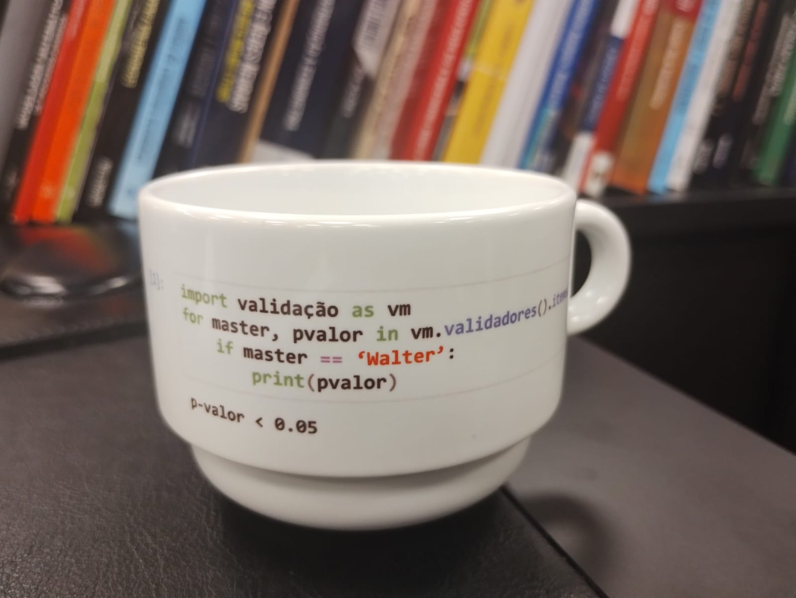

SFN Monitor
ao vivoDashboard do Sistema Financeiro Nacional com dados ao vivo do BACEN: ROE, NIM, inadimplência, Basileia e eficiência dos 10 maiores bancos, com atualização automática.
Engenheiro Físico (UFSCar), Mestre em Engenharia Financeira-Matemática (FGV-EESP). Atuação em modelos de risco de crédito, mercado, liquidez, precificação de derivativos, modelos regulatórios para bancos, tesourarias e assets.

Engenheiro Físico (UFSCar) | Mestre em Engenharia Financeira-Matemática (FGV-EESP)
Especialista em modelos de risco de crédito, mercado, liquidez, taxas de juros, futuros, termos, opções, XVAs, ECL-Banking, credit pricing.
Dashboards ao vivo
Dashboard do Sistema Financeiro Nacional com dados ao vivo do BACEN: ROE, NIM, inadimplência, Basileia e eficiência dos 10 maiores bancos, com atualização automática.
Ranking de reclamações do Banco Central ao vivo: irregularidades procedentes por assunto para bancos S1 e S2, com filtros por conglomerado e série trimestral.
Dados oficiais da CVM para 628 empresas abertas: BP, DRE, indicadores setoriais e Z-Score de Altman nos modelos original, ajustado e de Caouette.
Framework open-source de gestão de risco operacional. Mapa 20-box Impacto × Ambiente de Controles, análise de gap regulatório com testes BSM PQO 2025 rastreados item-a-item, cadeia Processo → Risco → Fator de Risco → Controle → Teste.
Ferramentas e bibliotecas
Aplicativo de precificação de empréstimos bancários com base em RAROC e ROE endógeno, acompanhado de caderno com a derivação do modelo.
Biblioteca Python para precificação de opções vanilla e exóticas (bermudas, asiáticas e outras) via GBM e Monte Carlo, publicada no PyPI.
Curso e livro (504 páginas, 20 capítulos) de precificação de derivativos em Python: de Black-Scholes e Fourier a Heston, saltos, americanas, calibração e juros. Baseado em Hilpisch (2015), com 530 verificações numéricas.
Plataforma de otimização de portfólios com 13 modelos clássicos (Markowitz, Black-Litterman, HRP, ERC, entre outros), backtest histórico e comparação sobre ações brasileiras. API FastAPI e dashboard React.
Análise de carteiras de crédito baseada em Bolder (2018): modelos de mistura e de limiar, capital IRB com ajuste de granularidade, contribuições de risco, VaR e ES sobre carteira própria em CSV.
Pipeline end-to-end de credit scoring: da base em layout padrão à regressão logística, scorecard por WoE, validação out-of-time (PSI, CSI), grupos homogêneos e PD calibrada para provisão e pricing.
Curso em doze capítulos de risco de crédito em Python, baseado em Löffler & Posch: PD, transição, LGD, correlação, perda de carteira, validação, CDS e capital IRB, com bases sintéticas de parâmetros conhecidos.
Pipeline de collection score: carteira simulada por faixa de atraso, regressão logística, métricas de regularização e roll rate, e estratégia de cobrança por canal com fronteira orçamento×lucro.
Simulação de uma gestora de fundos ponta a ponta: boletagem com pré-trade compliance, marcação a mercado, VaR e stress, enquadramento CVM 175, cotização, taxas, IR e conciliação com o administrador.
Temas diversos
Simulador para engenharia de satélites: propagação orbital com J2, dinâmica de atitude, controle PID de apontamento, torques magnéticos e balanço energético com painéis solares.
Primeira tradução integral (português e inglês) da obra fundadora da cronologia moderna, escrita por Joseph Scaliger em 1583. Texto-semente para revisão acadêmica, inspirado nos trabalhos de Anthony Grafton (Princeton).
Tradução trilíngue (latim, português e inglês) do manual de cronologia que Scaliger publicou em 1606 como continuação didática do De Emendatione: definições, demonstrações e exemplos numéricos.
Tradução trilíngue do tratado de Paulus Crusius (Basileia, 1578), fonte direta de Scaliger: sincronização de calendários, tabelas de 27 eras e a Tabula Paschalis. Completa o trio do corpus.
Estudo de caso sobre a construção de uma plataforma SaaS de gestão condominial com apoio de IA (Claude Sonnet 4.6), com os prós e contras do processo.
Experimento de composição musical com auxílio de IA: letra autoral e áudio gerado por modelo generativo.
Curso em nove módulos, de Galileu às equações de Einstein: cálculo tensorial simbólico, solução de Schwarzschild e testes clássicos (Mercúrio, deflexão da luz, GPS, GW150914), com derivações verificadas em código.
Linha do tempo da passagem da tradição oral à escrita do texto bíblico, em cronologia baseada no Texto Massorético: autoria, escribas e datação dos 66 livros, fontes extrabíblicas e confirmação arqueológica.
Caderno aberto de aprendizado simultâneo de vêneto e italiano: fonética e grafia comparadas, clíticos de sujeito, verbos e primeiros diálogos. Baseado no curso Łengua Mare (Fernando Menegatti).
Análises técnicas e quantitativas.
Regra de política monetária adaptada ao Brasil, incorporando câmbio, risco-país (CDS) e suavização da taxa.
Modelagem da taxa de referência do Brasil e dos EUA por filtro de Kalman, como base para leitura do momento econômico.
Evolução do juro real ex-ante e do juro neutro no Brasil a partir das expectativas do BCB e de dados do IPEA e da B3.
Dissertação de mestrado (FGV-EESP): taxa mínima de um consignado INSS que remunera o risco de inadimplência e o custo de capital.
Taxa mínima de um empréstimo bancário que remunera o risco de crédito e o custo de capital, modelada por cadeias de Markov.
Desenvolvimento simplificado de um modelo de credit scoring para aprovação de crédito PJ, com a base de dados disponível.
Análise de seguro de vida inteiro (Whole Life) com a biblioteca LifeInsureR em R, de Reinhold Kainhofer, e aplicativo de testes.
Modelo heurístico para o VaR de crédito (Default Risk Charge) de uma carteira trading sob o FRTB.
Comparação conceitual entre o default risk charge do trading book e o credit spread risk do banking book.
Tipos de opções (financeiras, reais e 0DTE), suas particularidades e diferenças.
Avaliação empírica dos argumentos de André Lara Resende (2017 e 2026) sobre o custo fiscal dos juros, em diálogo com Cochrane: cointegração, VAR, pass-through e contrafactual de corte da Selic.
Avaliação de modelos de crédito ligada à informação mais recente da carteira: nowcast de PD por matriz de transição, ponte de convergência e alertas de descalibragem, sob CMN 4.966 / IFRS 9.
Interessado em projetos e pesquisas aplicadas à modelagem, engenharia financeira e programação.